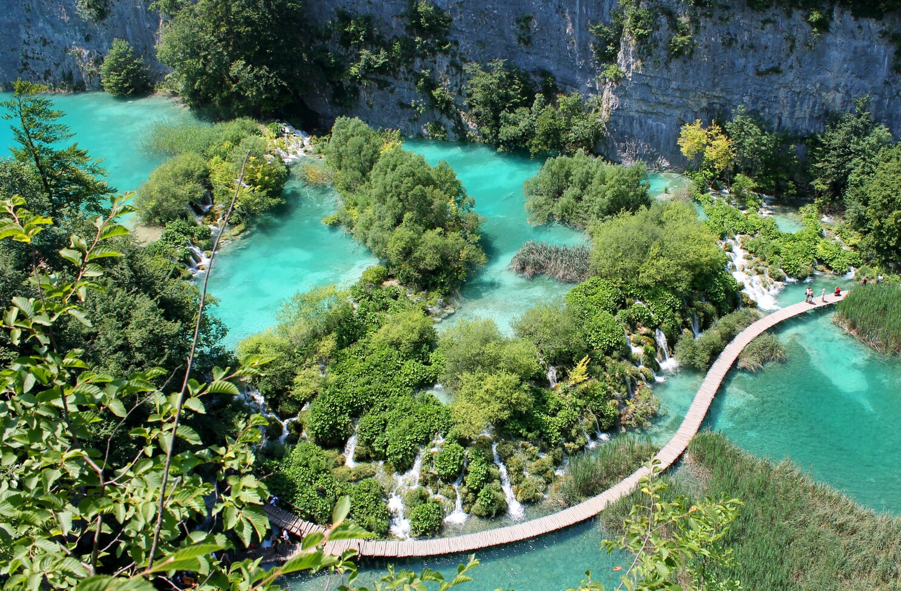
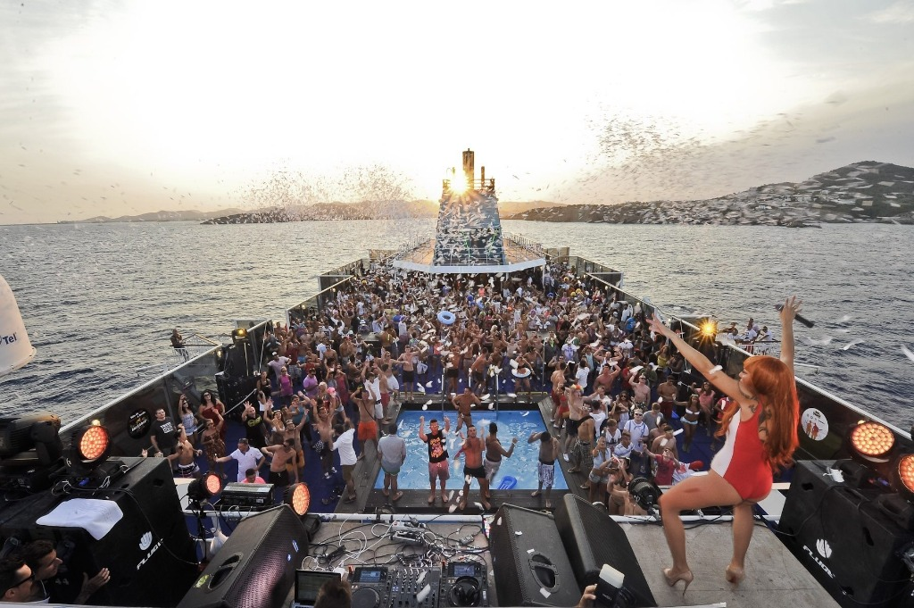
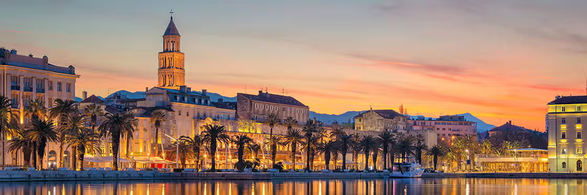
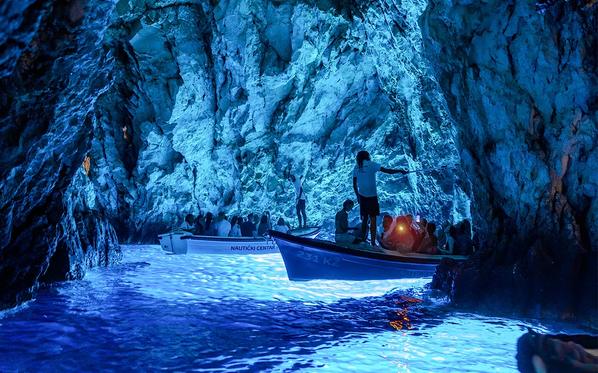
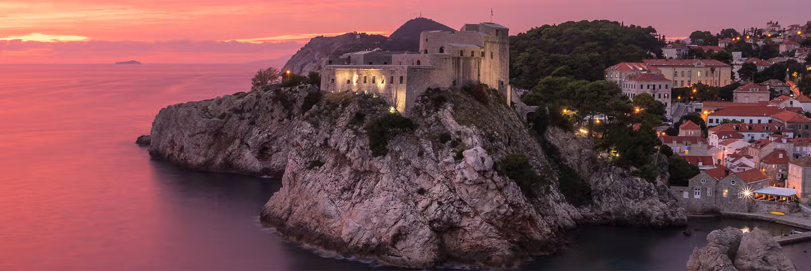
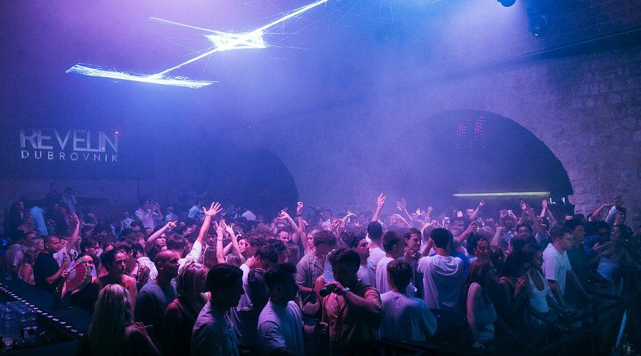

Itinerario Detallado
Día 1: Llegada a Zadar 01/07/2026

- 11:30 - Aeropuerto de Bilbao.
VY2451
BIO
Bilbao
✈️
MXP
Milán (Malpensa)
Departs
12:50
Arrives
14:45
On Time

FR8762
MXP
Milán (Malpensa)
✈️
ZAD
Zadar
Departs
16:20
Arrives
17:40
On Time

- 19:00 - Coger coche de alquiler en el Aeropuerto de Zadar.
- Visitar Zadar.
- Tomar algo chill.
💡 Recomendación: Pasead por el casco antiguo al atardecer y disfrutad del
sonido natural del Órgano del Mar (Sea Organ) y el espectáculo de luces del Saludo al Sol.
Noche: Zadar
Día 2: Lagos Plitvice 02/07/2026

- 7:00 - Salida hacia Plitvice (2h aprox).
- 9:00 - Entrada al parque (Entrada 1).
- 17:00-17:30 - Salida hacia Zadar.
- 20:00 - Dejar coche de alquiler en el Aeropuerto de Zadar.
💡 Recomendación: Llegad temprano a Plitvice para evitar multitudes.
Aseguraos de ver la Gran Cascada (Veliki Slap) y hacer el recorrido de los Lagos Inferiores.
Noche: Zadar
Día 3: Zadar & Boat Party 03/07/2026

- Visita por Zadar por la mañana.
- Boat party.
- Fiesta en Zadar a la noche.
💡 Recomendación: Para curar la resaca o picar algo rápido antes de la
fiesta, buscad los locales de comida callejera (burek de queso o carne) cerca de la calle
Kalelarga.
Noche: Zadar
Día 4: Zadar – Split 04/07/2026

- 12:15 - Bus de Zadar a Split.
FB120
ZAD
Zadar
🚍
SPU
Split
Departs
12:15
Arrives
15:00
Confirmed

- Visitar Split por la tarde.
💡 Recomendación: En Split, es imprescindible perderse por las callejuelas
del Palacio de Diocleciano y tomar un helado paseando por el paseo marítimo (La Riva).
Noche: Split
Día 5: Excursiones en Split 05/07/2026

- Visitar Split o hacer alguna excursión. Opciones para hacer excursión:
- Rafting (Río Cetina).
- Excursión en barco (Visita Blue Cave e islas o Laguna Azul e islas).
- Visita a Mostar (Bosnia).
- Fiesta a la noche.
💡 Recomendación: La Laguna Azul es perfecta para nadar y relax chill. Si
buscáis historia y algo completamente diferente, Mostar y su famoso puente son
espectaculares (pero preparaos para un viaje más largo).
Noche: Split
Día 6: Split – Hvar 06/07/2026

- 17:00 - Ferry de Split a Hvar.
F108
SPU
Split
⛴️
HVR
Hvar
Departs
17:00
Arrives
17:55
Reserved

- Ver la ciudad de Hvar.
- Tomar algo chill.
💡 Recomendación: Subid a la Fortaleza Española (Fortica) justo antes del
atardecer para tener la mejor vista panorámica de la bahía y las islas Pakleni.
Noche: Hvar
Día 7: Hvar 07/07/2026

- Buscar Boat Party local.
- Fiesta por la noche en Hvar.
💡 Recomendación: Por la mañana, id a relajaros a la playa de Pokonji Dol.
Para la fiesta, Carpe Diem es el clásico, pero preguntad a los locales por las mejores boat
parties del momento.
Noche: Hvar
Día 8: Llegada a Dubrovnik 08/07/2026

- Despertar con calma.
- 16:45 - Ferry de Hvar a Dubrovnik.
F202
HVR
Hvar
⛴️
DBV
Dubrovnik
Departs
16:45
Arrives
20:20
Reserved

- Dar una vuelta por la ciudad al anochecer.
💡 Recomendación: A vuestra llegada a Dubrovnik ya será de noche, la ciudad
iluminada es magia pura. Cenad dentro de la ciudad amurallada para entrar en ambiente.
Noche: Dubrovnik
Día 9: Dubrovnik & Montenegro 09/07/2026

- Visitar Dubrovnik.
- 18:00 - Coger coche de alquiler en Dubrovnik (Centro).
- 20:00 - Viajar a Montenegro (1:15h aprox).
💡 Recomendación: En Dubrovnik, tenéis que recorrer las murallas. Ya con el
coche, disfrutad del trayecto por la costa entrando a la impresionante Bahía de Kotor al
atardecer.
Noche: Montenegro
Día 10: Ruta Costa Montenegro 10/07/2026

- Ruta Meljine - Kotor - Budva.
- Ruta en coche con paradas en playas durante todo el día (hacia el sur).
💡 Recomendación: Haced parada obligatoria en el casco antiguo de Kotor. En
Budva, buscad la playa de Sveti Stefan para sacaros las mejores fotos con la icónica
península de fondo.
Noche: Montenegro
Día 11: Vuelta a Dubrovnik 11/07/2026

- Volver a Dubrovnik parando en playas por el camino.
- 19:00 - Dejar coche de alquiler en Dubrovnik.
- Lockers / Apartamento pequeño para ducha y dejar maletas.
- Fiesta de despedida en Dubrovnik.
💡 Recomendación: En el viaje de vuelta, parad en Perast (Montenegro) o en
Cavtat (Croacia) para bañaros. Despedid el viaje tomando un cocktail en Buža Bar, un bar
construido sobre los acantilados de las murallas de Dubrovnik.
Noche: De fiesta (Sin alojamiento)
Día 12: Fin del Viaje 12/07/2026
- 4:30-5:00 - Taxi/bus al aeropuerto.
- 07:20 - Vuelo de vuelta desde Dubrovnik.
EZY3451
DBV
Dubrovnik
✈️
ORY
París Orly
Departs
07:20
Arrives
10:00
Confirmed

FR1102
ORY
París Orly
✈️
BIO
Bilbao
Departs
14:00
Arrives
16:45
Confirmed

💡 Recomendación: Revisad bien que no os dejáis nada en las taquillas y
llegad con tiempo al aeropuerto. ¡Buen viaje de vuelta!
Último día
Resumen del Viaje
| Día | Ubicación | Actividad Principal |
|---|---|---|
| Día 1 | Zadar | Llegada, visita al casco antiguo y relax. |
| Día 2 | Plitvice | Excursión a los Lagos Plitvice. |
| Día 3 | Zadar | Visita a la ciudad y Boat Party. 🛥️🍸 |
| Día 4 | Split | Traslado en bus y visita a la ciudad. |
| Día 5 | Split | Excursión (Rafting/Barco/Mostar) y fiesta. 🪩🍸 |
| Día 6 | Hvar | Ferry a la isla y tarde de relax. |
| Día 7 | Hvar | Exploración de la isla y Boat Party. 🛥️🍸 |
| Día 8 | Dubrovnik | Ferry y visita nocturna a la ciudad. |
| Día 9 | Montenegro | Visita a Dubrovnik y traslado a Kotor. |
| Día 10 | Montenegro | Ruta por la costa (Kotor, Budva, playas). |
| Día 11 | Dubrovnik | Regreso, tarde de playas y fiesta de despedida. 🪩🍸 |
| Día 12 | - | Vuelos de regreso a casa. |